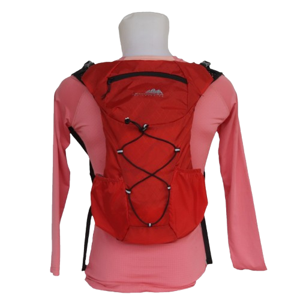

Selamat datang di OPEN TRIP MONTAIN, Selain menyediakan paket open trip kita juga penyedia perlengkapan
pendakian terpercaya untuk petualangan mendaki
gunung yang nyaman dan aman! Kami menyediakan berbagai alat pendakian berkualitas, mulai dari carrier,
jaket, sepatu, hingga hydro pack, selain menyewakan alat pendakian kita juga menawarkan jasa sweepir yang
siap menemani perjalanan Anda ke
puncak.
carrier
Dirancang khusus untuk mendukung beban berat dengan sistem
yang ergonomis, tas carrier mampu menampung segala kebutuhan mulai dari pakaian, makanan, hingga
perlengkapan pendakian dengan ruang yang luas dan banyak kompartemen..
Jaket Consina
perlengkapan esensial bagi para petualang yang siap menaklukkan medan dingin dan cuaca ekstrem di
pegunungan. Dirancang khusus dengan bahan tahan angin dan air, jaket gunung memberikan perlindungan
maksimal dari suhu rendah, angin kencang, dan hujan deras, sehingga Anda tetap hangat dan kering
selama pendakian.
.png)
Jasa Swiper
Kami hadir untuk memudahkan para pendaki yang ingin menikmati keindahan gunung tanpa harus membawa
beban
berat. Kami menyediakan layanan jasa swiper gunung yang membantu membawa perlengkapan pendakian Anda
hingga ke pos atau titik tertentu di jalur pendakian.
Sepatu Gunung
kami menyediakan layanan penyewaan sepatu gunung yang berkualitas dengan berbagai pilihan ukuran dan
model, sepatu-sepatu
kami dirancang khusus untuk menghadapi medan pegunungan yang beragam, mulai dari jalur berbatu,
tanah licin, hingga jalur berlumpur.

hydro pack
kami menyediakan layanan penyewaan hydro pack berkualitas tinggi. Hydro pack adalah solusi praktis bagi pendaki yang ingin
menghindari kerepotan membawa botol air, sambil tetap menjaga cairan tubuh tetap terjaga sepanjang
perjalanan.
.jpeg)